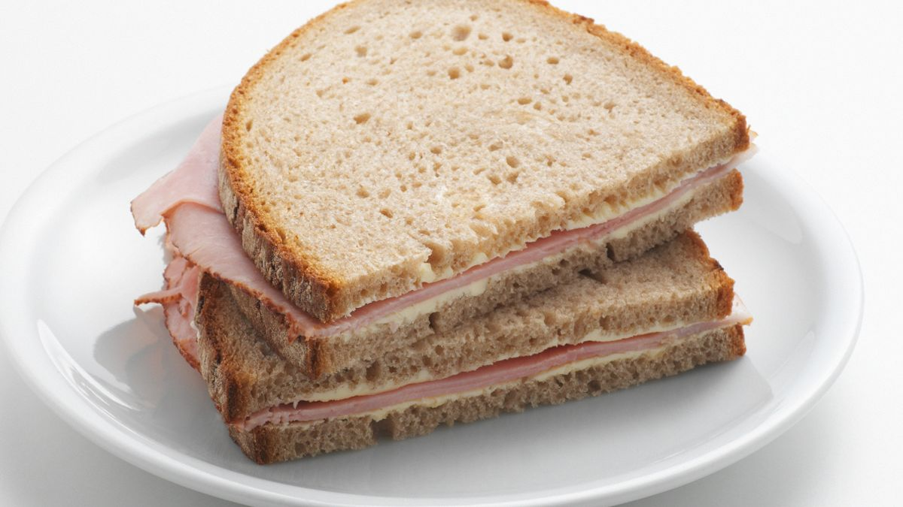

Sandwich

Scrumptious Sandwich
The sandwich is an American classic with over 3 million different styles to prepare it (yes, I did in fact make that number up)
Ingredients
*You can get the ingredients of your favorite brand, taste, shape, color, etc...*
Steps
1. Open the bag of sandwich bread
2. Get 2 slices of bread out of the bag
3. Place each slice next to each other on top of serving plate
4. Get 2 slices of ham
5. Place them on top of one slice of bread
6. Get 1 slice of cheese
7. Place the 1 slice of cheese on top of the 2 slices of ham
8. Pick up the empty slice of bread
9. place the empty slice of bread on top of the slice of cheese
10. Sandwich is ready to be eaten, enjoy!
Home
Back to the top